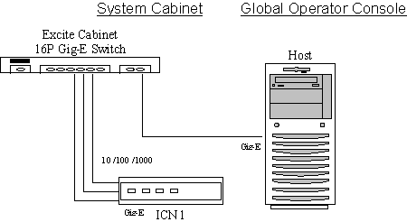

Proprietary to General Electric Company
Direction 5670006, Rev# 1
Discovery MR750w GEM Service Methods
Module Version 1.0, Version Date 4/26/07
Proprietary to General Electric Company |
Diagnostics >> VRE Subsystem >> VRE Communication and Hardware Diagnostic
The purpose of this diagnostic is to stress the Ethernet network path between the host and ICN. Data used in the diagnostic is checked for integrity.
This diagnostic sends a large amount of data from the host to the ICN and back again via the FTP protocol. Before and after checksums are compared to verify data integrity.
Host Ethernet interface
Host to VRE switch Ethernet cable
VRE switch to ICN Ethernet cable
ICN Ethernet interface
VRE switch
All Ethernet cables connected from the Host to the VRE Ethernet switch.
All Ethernet cables connected from the ICN to the VRE Ethernet switch.
ICN is turned on.
Illustration 1: VRE Hardware Communication Block Diagram

Verify all Ethernet cables are connected per step 4, above.
Execute Diagnostic.
Verify each ICN tested passed the diagnostic.
| Fault | Problem Description | GE Field Action |
|---|---|---|
| FAILED | The ICN has failed the diagnostic |
|
| No ICN’s Defined | Host has no ICN’s defined | Check VRE configuration |
None